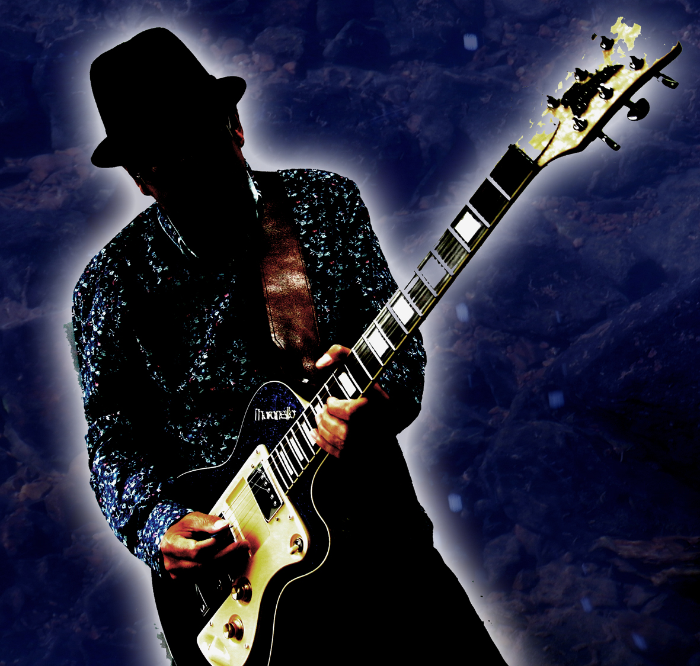
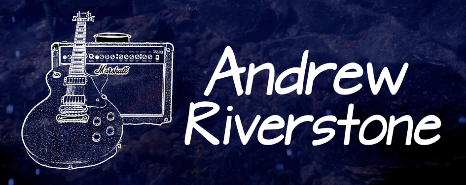

Andrew Riverstone
British Blues & Roots Guitarist/Singer/Songwriter

Andrew Riverstone's music pays homage to 60's blues guitarists
Peter Green, Jeff Beck
His recent self titled 4th solo album was playlisted on blues radio shows across the UK,
"All the instrumentation is played with skill and verve, and the guitar solos are uniformly excellent.
Jimmy Page, and classic American songwriters Neil Young, JJ Cale and Tom Petty.
Europe, Australasia and the United States, reaching the IBBA chart top 40.
Lyrically, Riverstone is as agile a wordsmith as he is a musician." Blues Matters Magazine.
"Andrew Riverstone's fluent, sometimes hypnotic playing is the common thread." Roots time Belgium. 
